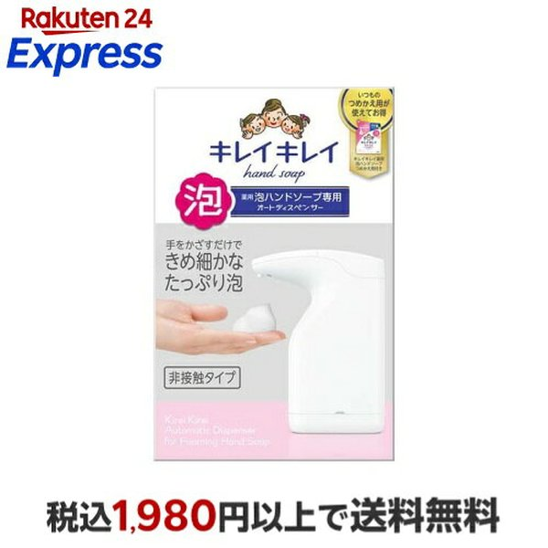
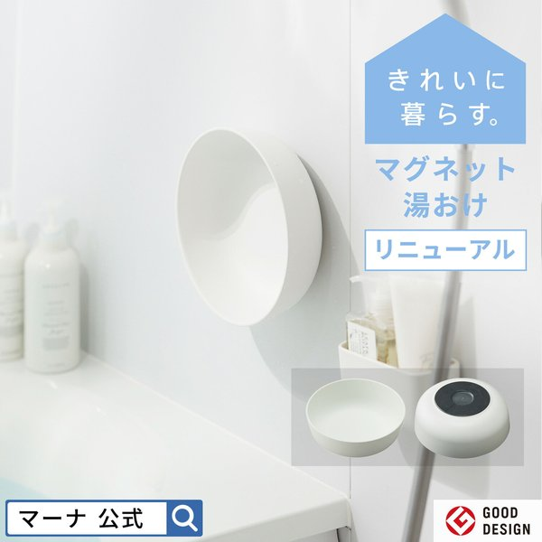
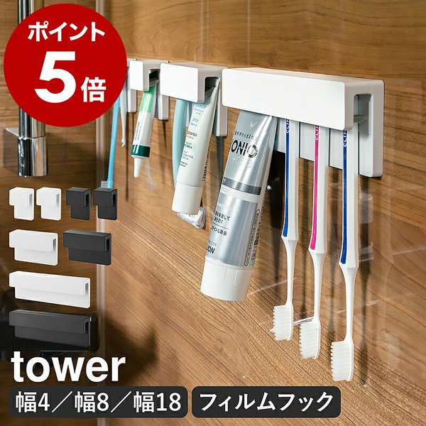
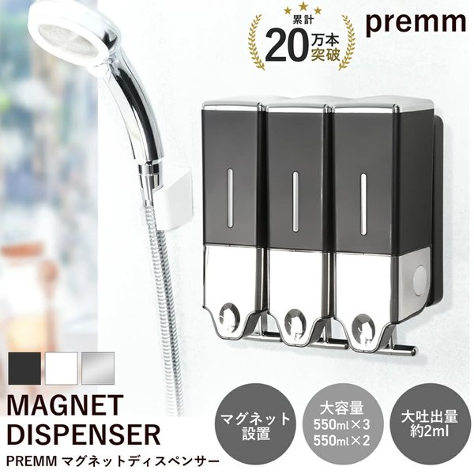
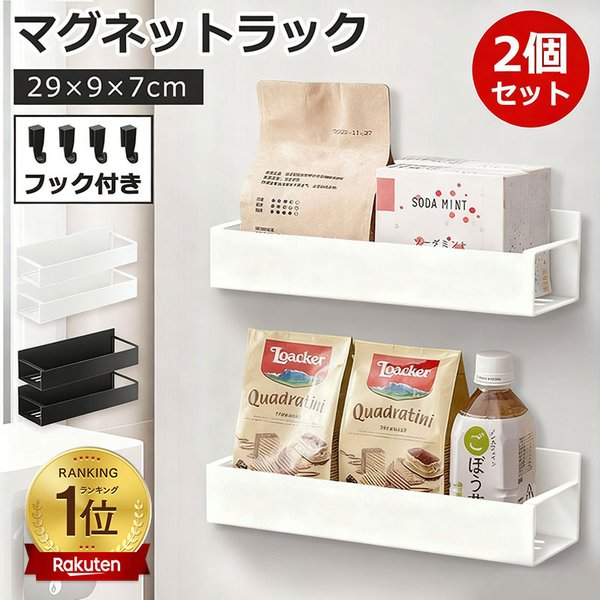
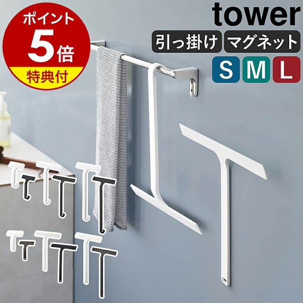
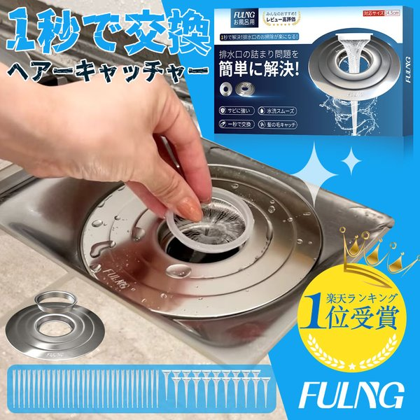
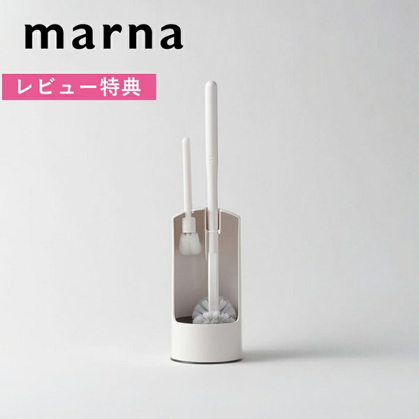
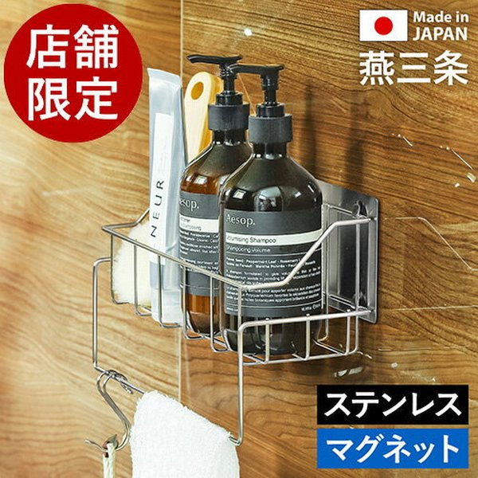
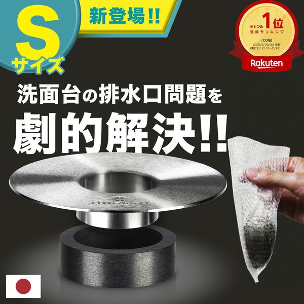

【2026年最新】ヌメリ・カビ対策＆掃除が激減！お風呂・洗面所・洗濯機周りの浮かせる収納＆水回りグッズ10選
お風呂と洗面所の掃除が面倒なのは、床に物が置いてあるからです。湯おけ、シャンプーのボトル、歯ブラシのコップ。置く場所を壁に移すだけで、拭く面積とヌメリの原因が減ります。
選ぶ軸は3つ。壁に付けられるか、水が溜まらない形か、そして掃除のときに外せるかです。マグネット式は、浴室の壁が磁石に付くパネルかどうかを先に確認します。フィルムフックはタイルにも貼れますが、はがすと粘着が弱くなるので、位置は一度で決めたいところ。水切りワイパーや排水口のヘアキャッチャーは、毎日1回の動作でヌメリと詰まりを防ぐ道具なので、値段より使い続けられる形かを優先してください。浮かせる収納は、物を減らすより先に、置き場所を変えるだけで効果が出ます。
本記事では、楽天市場で人気・高評価のお風呂・洗面所・洗濯機周りの浮かせる収納＆水回りグッズ10選を、実売価格とレビュー評価つきで写真付き紹介します。
- おすすめ10選 スペック・特徴比較表
- BEST 1｜キレイキレイ 薬用泡ハンドソープ専用オートディスペンサー＋つめかえ
- BEST 2｜マーナ マグネット湯おけ（浴室・日本製）
- BEST 3｜山崎実業 tower フィルムフック差し込み式歯ブラシ＆チューブホルダー（2個組）
- BEST 4｜PREMM マグネット壁掛けシャンプーディスペンサー 550ml（3本セット）
- BEST 5｜マグネットラック 2個セット（洗濯機横・冷蔵庫横・フック付き）
- BEST 6｜山崎実業 tower マグネット水切りワイパー（S／M／L）
- BEST 7｜FULNG お風呂 ヘアキャッチャー（排水口カバー）
- BEST 8｜マーナ 2in1 トイレブラシ（大小ブラシ・ケース付き）
- BEST 9｜燕三条 日本製 ステンレス マグネット収納ラック（浴室）
- BEST 10｜HUBATH 洗面台 ヘアーキャッチャー（ステンレス・口径32／36mm）
- 【読者負担0円】買わなくても得する無料サービス
- まとめ：お風呂・洗面所・洗濯機周りの浮かせる収納10選の選び方
| 順位 | 商品名 | ブランド | 最大の特徴・おすすめ理由 | 総合評価 |
|---|---|---|---|---|
| BEST 1 | キレイキレイ 薬用泡ハンドソープ専用オートディスペンサー＋つめかえ | ライオン（キレイキレイ） | 手をかざすだけで泡が出る | 4.32 |
| BEST 2 | マーナ マグネット湯おけ（浴室・日本製） | マーナ（marna） | 壁に貼れるので床に置かなくて済む | 4.53 |
| BEST 3 | 山崎実業 tower フィルムフック差し込み式歯ブラシ＆チューブホルダー（2個組） | 山崎実業（tower） | コップを使わず歯ブラシを浮かせられる | 4.59 |
| BEST 4 | PREMM マグネット壁掛けシャンプーディスペンサー 550ml（3本セット） | PREMM | 壁に付けて床やふちを空けられる | 4.38 |
| BEST 5 | マグネットラック 2個セット（洗濯機横・冷蔵庫横・フック付き） | マグネットラック（2個セット） | 洗濯機横や冷蔵庫横に貼って浮かせられる | 4.63 |
| BEST 6 | 山崎実業 tower マグネット水切りワイパー（S／M／L） | 山崎実業（tower） | 壁に付くので床に置かなくて済む | 4.68 |
| BEST 7 | FULNG お風呂 ヘアキャッチャー（排水口カバー） | FULNG（フルング） | 髪の毛をまとめて受け止める | 4.66 |
| BEST 8 | マーナ 2in1 トイレブラシ（大小ブラシ・ケース付き） | マーナ（marna） | 大小2本で面と溝を洗い分けられる | 4.68 |
| BEST 9 | 燕三条 日本製 ステンレス マグネット収納ラック（浴室） | 燕三条（日本製） | 日本製ステンレスでサビに強い | 4.68 |
| BEST 10 | HUBATH 洗面台 ヘアーキャッチャー（ステンレス・口径32／36mm） | HUBATH（ヒューバス） | 洗面台の排水口で髪の毛を受け止める | 4.68 |
キレイキレイ 薬用泡ハンドソープ専用オートディスペンサー＋つめかえ

手をかざすだけで泡が出る、ライオンのハンドソープ専用ディスペンサー。泡立てる手間がなく、子どもが自分で手を洗う習慣にもつながります。本体にキレイキレイの薬用泡ハンドソープのつめかえを入れて使う仕組みで、設置は電池式。レビュー136件・評価4.32、2,201円で、詰め替えも含めたセットです。専用の泡タイプ以外は使えないので、そこだけ確認してください。楽天市場での実売価格は約2,201円（2026年11月時点）。
- 手をかざすだけで泡が出る
- 詰め替え付きのセットで2,201円
- レビュー136件・評価4.32
- キレイキレイの泡タイプ専用で、他のハンドソープは入れられない
マーナ マグネット湯おけ（浴室・日本製）

底にマグネットが付いた湯おけで、浴室の壁にそのまま貼れます。床に置かないぶんヌメリが付きにくく、掃除のときに持ち上げる手間も減ります。ふちが注ぎ口になっていて、子どもの頭にかけるときも水がこぼれにくい形。日本製でレビュー255件・評価4.53、2,380円。風呂の床に置くものを1つ減らすだけで、掃除の負担ははっきり変わります。楽天市場での実売価格は約2,380円（2026年11月時点）。
- 壁に貼れるので床に置かなくて済む
- ヌメリが付きにくく掃除がラク
- 日本製・レビュー255件
- マグネットが付く壁（浴室パネルなど）でないと使えない
山崎実業 tower フィルムフック差し込み式歯ブラシ＆チューブホルダー（2個組）

フィルムフックで壁に貼る、歯ブラシとチューブのホルダー。歯ブラシをコップに立てずに済むので、コップの底にたまるヌメリと、コップを洗う手間が減ります。差し込むだけの構造で、歯ブラシとチューブをまとめて浮かせられます。2個組で1,100円、レビュー2,705件・評価4.59。洗面台の上を空けたいなら、最初に試す価格です。楽天市場での実売価格は約1,100円（2026年11月時点）。
- コップを使わず歯ブラシを浮かせられる
- 2個組で1,100円
- レビュー2,705件・評価4.59
- フィルムフックは貼れる面が限られ、はがすと粘着が弱くなる
PREMM マグネット壁掛けシャンプーディスペンサー 550ml（3本セット）

浴室の壁にマグネットで付く、550mlの詰め替えボトル。シャンプー・コンディショナー・ボディソープを入れて、浴槽のふちや床に置かずに済みます。1回の押し出し量が多く、最後まで中身を使い切りやすい構造。レビュー6,374件・評価4.38で、シャンプー類のボトルを浮かせる定番です。3本セットなので、家族分をまとめて置き換えられます。楽天市場での実売価格は約5,480円（2026年11月時点）。
- 壁に付けて床やふちを空けられる
- 550mlの大容量で詰め替えの回数が少ない
- レビュー6,374件の定番
- マグネットが付かない壁（一部のタイル・ユニットバス）では使えない
マグネットラック 2個セット（洗濯機横・冷蔵庫横・フック付き）

洗濯機の横や冷蔵庫の側面に貼るマグネットラックの2個セット。洗剤や小物を浮かせられるので、洗濯機の上に物を積まなくなります。サイズは29×9×7cmで、フックが付き、耐荷重は10kg。レビュー83件・評価4.63、1,980円。洗濯機まわりを掃除しやすい状態に保ちたい人に向いています。楽天市場での実売価格は約1,980円（2026年11月時点）。
- 洗濯機横や冷蔵庫横に貼って浮かせられる
- フック付きで耐荷重10kg
- 2個セットで1,980円
- レビュー83件と数は多くないので、口コミを確認してから買う
山崎実業 tower マグネット水切りワイパー（S／M／L）

浴室の壁や鏡の水滴を、1回引くだけで落とせるワイパー。マグネットで壁に付くので、床に置かずに済み、ヌメリの原因を1つ減らせます。S・M・Lからサイズを選べ、鏡用には小さめが扱いやすいです。レビュー8,563件・評価4.68、1,485円。毎日のお風呂上がりに1回引くだけで、カビの出方が変わります。楽天市場での実売価格は約1,485円（2026年11月時点）。
- 壁に付くので床に置かなくて済む
- レビュー8,563件・評価4.68
- 1,485円で毎日使える
- ゴムの刃は使ううちに劣化するので、定期的に交換する
FULNG お風呂 ヘアキャッチャー（排水口カバー）

浴室の排水口に被せるタイプのヘアキャッチャー。髪の毛をまとめて受け止めるので排水口の奥に流れず、掃除は持ち上げてゴミを捨てるだけです。ユニットバス用で、繰り返し使えます。レビュー5,893件・評価4.66、1,040円。髪の毛が詰まって排水が遅くなる前に、1つ入れておくと安心です。楽天市場での実売価格は約1,040円（2026年11月時点）。
- 髪の毛をまとめて受け止める
- 持ち上げて捨てるだけの掃除
- レビュー5,893件・1,040円
- 排水口のサイズに合わないと浮いたり傾いたりする
マーナ 2in1 トイレブラシ（大小ブラシ・ケース付き）

大小2本のブラシが1つのケースに収まるトイレブラシ。大きいブラシで面を洗い、小さいブラシで便器のふちの奥や溝を洗えます。ケース付きで、使ったあとも床に水滴が落ちない構造。パナソニックのアラウーノ推奨商品でもあります。レビュー112件・評価4.68、2,200円。トイレの掃除道具を1つにまとめたい人に向いています。楽天市場での実売価格は約2,200円（2026年11月時点）。
- 大小2本で面と溝を洗い分けられる
- ケース付きで床が汚れにくい
- 評価4.68（レビュー112件）
- ケースごと置く場所が要るので、便器横の幅を測ってから買う
燕三条 日本製 ステンレス マグネット収納ラック（浴室）

燕三条で作られたステンレス製のマグネットラック。シャンプーやボディソープのボトルがまとめて収まる大きさで、壁に付けて浴槽まわりを空けられます。ステンレスなのでサビに強く、水に濡れたままでも使いやすいです。レビュー1,334件・評価4.68、3,520円。樹脂製のラックが数年で傷むのが気になる人に向いています。楽天市場での実売価格は約3,520円（2026年11月時点）。
- 日本製ステンレスでサビに強い
- ボトルがまとめて収まる大きさ
- レビュー1,334件・評価4.68
- ステンレスは落とすと浴槽を傷つけるので、取り付け位置に注意する
HUBATH 洗面台 ヘアーキャッチャー（ステンレス・口径32／36mm）

洗面台の排水口に差し込む、ステンレス製のゴミ受け。髪の毛やホコリを受け止め、掃除のときは持ち上げて捨てるだけです。口径32mmと36mmに対応し、洗面台の排水口のサイズを測って選べます。レビュー12,555件・評価4.68、1,980円と、洗面所まわりでは飛び抜けて口コミが多い製品。ヌメリの原因になる髪の毛を、流す前に止められます。楽天市場での実売価格は約1,980円（2026年11月時点）。
- 洗面台の排水口で髪の毛を受け止める
- レビュー12,555件・評価4.68
- ステンレス製でサビにくい
- 排水口の口径に合わないと使えないので、購入前に測る
この記事の商品を買う前に、まずは無料で得する選択肢をチェック。どれも登録・利用は0円で、無料期間中に解約すれば料金はかかりません。読みたい雑誌がある人、ポイントを貯めたい人、アンケートなら気軽という人、それぞれに合うものを選べます。
初回31日無料・無料期間中に解約すれば0円 → 楽天ポイントモール｜登録無料で毎日ポイ活
買い物なしでもポイントが貯まる無料サービス → 楽天インサイト｜アンケートに答えてポイント
登録無料・すきま時間のアンケートで貯まる → 楽天カード｜年会費永年無料
新規発行・年会費ずっと0円 →
4つのサービスの違いと使い分けは「出費0円で得する！買わずにポイントが貯まる無料サービス厳選4選」でまとめています。
💡 まとめ：お風呂・洗面所・洗濯機周りの浮かせる収納10選の選び方
水回りの掃除を減らすコツは、床に置くものを減らすことです。湯おけはマグネット式にして壁へ、シャンプーは壁掛けのディスペンサーへ、歯ブラシはコップを使わないホルダーへ。この3つを移すだけで、拭く面積とヌメリの原因がまとめて減ります。排水口は、髪の毛を受け止めるヘアキャッチャーを入れておけば、掃除は持ち上げて捨てるだけになります。ワイパーは毎日のお風呂上がりに1回引くだけで、壁と鏡の水滴が残らず、カビの出方が変わります。取り付ける前に、壁の素材（マグネットが付くか、フィルムフックが貼れるか）と、排水口の口径を測っておくと、届いてから使えないということがありません。
楽天市場では「5と0のつく日」や「お買い物マラソン」などのキャンペーンに合わせて購入すると、ポイント還元が最大化してお得に手に入ります。ぜひチェックしてみてくださいね。